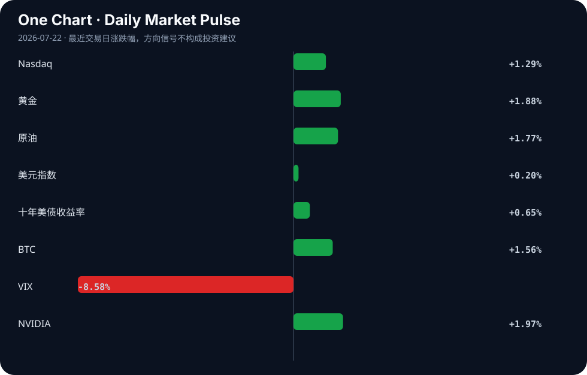

Daily Intelligence
2026-07-22｜Wednesday
Today’s Thesis｜今日一句话
AI 发展的物理约束（算电协同）与垂直应用（农业/情感）正同时成为资本重注的焦点，而宏观贸易摩擦的反复正迫使跨国资本在“脱钩”叙事下寻找实质性的套利空间。
① Executive Summary｜30 秒
- AI：AI 基础设施面临算力与电力协同的硬约束 [A5]，资本加速向农业 [A1][A4] 与情感陪伴 [A2] 等垂直场景渗透，同时监管齿轮开始转动 [A10][A11]。
- 商业：中美贸易反弹 [B10] 与跨国企业加码中国 [B5] 形成反直觉的共存，关税压力下印度钢铁等产业被迫回流本土 [B9]。
- 宏观：关税与通胀数据交织施压非美货币 [B20]，而俄罗斯 [B17] 与加密资产试图在传统金融体系外建立外贸替代通道。
② AI Daily
1. 算力与电力的物理极限对撞
What Happened：中国官方提出需推进“算电协同”以应对 AI 加速发展带来的能源挑战 [A5]；IREN 宣布获得 28 亿美元 AI 合约后股价大涨 [A24]；微软强调 AI 时代的可持续性 [A16]。 Why It Matters：算力扩张已触及电网承载的物理极限，资本不再仅为算力芯片买单，而是直接为“算力-电力”一体化基础设施买单。 Second-order Effect：算力集群选址逻辑重构 → 绿电富集区获得算力溢价 → 传统电网运营商向 AI 基础设施商转型。
2. 垂直场景落地与治理摩擦加剧
What Happened：爱荷华大学构建 AI 模型预测硝酸盐波动 [A1]，美国新法案推动农场采用 AI [A4]；同时，路易斯安那州新 AI 法律将于 8 月 1 日生效 [A10]，伊利诺伊州发布 AI 教育指导 [A6]，而 AI 聊天机器人的选举建议被证实不可靠 [A11]。 Why It Matters：AI 在高价值物理场景（农业/环境）中加速落地，但在高社会风险场景（选举/教育）中遭遇治理反制，技术扩散呈现极度非对称性。 Second-order Effect：行业特定 AI 应用爆发 → 通用大模型合规成本急剧上升 → 垂直领域私有化小模型成为企业避险首选。
3. 社会心理替代与大国协调机制
What Happened：越来越多的人转向 AI 寻求情感支持 [A2]，虚构聊天机器人推动了 AI 普及 [A22]；美中据报将于 9 月举行 AI 会谈 [A23]。 Why It Matters：AI 正在填补人类社会的心理缺口，而其宏观系统性风险已上升到需大国直接协调的层面。 Second-order Effect：社会原子化加剧 → 对 AI 情感依赖形成成瘾性商业闭环 → 监管介入（如未成年人保护）引发行业震荡。
③ Business Daily
制造与钢铁：贸易壁垒下的被动回流
欧洲收紧进口、中国挤压利润，印度钢铁制造商正将重心转回国内市场 [B9]。关税与产能过剩的双重挤压正在重塑全球钢铁贸易流向，区域化制造不再是战略选择，而是生存必然。
航空与出行：长周期繁荣与税收重估
波音与空客预测航空业繁荣将持续至 2045 年 [B3]；特斯拉-SpaceX 合并传闻浮现 [B14]；中国拟对电池开征消费税，“油电同权”时代引发讨论 [B19]。长周期出行需求依然强劲，但电动车正面临税收公平化带来的成本优势边际削弱。
能源与基础设施：从降本工具到算力保障
加纳企业引入智能能源管理系统以削减电力成本 [B12]；AI 时代的可持续性成为微软等巨头的核心议题 [B16]。能源管理正从传统的成本中心，转变为支撑算力扩张的核心竞争力与基础设施保障。
④ Macro Observation｜机制分析
世界正在发生什么？ 中美贸易出现反弹并提振全球前景 [B10]，跨国企业在全球不确定性中反而加强与中国的联系 [B5]；但同时，关税工具仍在被频繁使用 [B7]，导致加元等非美货币因新关税和通胀数据走弱 [B20]。
为什么发生？ 关税威胁与贸易往来并非线性互斥。政治叙事制造了“脱钩风险溢价”，但物理世界的供应链惯性与市场效率构成了硬约束。跨国资本在“去风险”的政治高波动期，实质上是在锁定供应链的“效率看涨期权”。
资本如何流动？ 热钱涌入 AI 底层（中国国资基金抢滩 AI [A18]，SK 海力士 265 亿美元 IPO 预期带动芯片股 [A15]）；同时，俄罗斯通过历史性加密规则为外贸开道 [B17]，资本在传统 SWIFT 体系外寻找结算替代通道。
接下来关注什么？ 欧洲央行决议对欧元区金融条件的定调 [B13]，以及美国新关税落地对新兴市场资本流动的实质冲击 [B20]。需区分“因预期而波动”与“因落地而重构”。
⑤ Signal Dashboard
| 指标 | 最新值 | 今日 | 信号 |
|---|---|---|---|
| Nasdaq | 25,837.21 | ↑ +1.29% | 风险偏好改善 |
| 黄金 | 4,085.80 | ↑ +1.88% | 避险/通胀对冲增强 |
| 原油 | 84.70 | ↑ +1.77% | 通胀压力上升 |
| 美元指数 | 101.19 | ↑ +0.20% | 金融条件偏紧 |
| 十年美债收益率 | 4.63 | ↑ +0.65% | 成长估值承压 |
| BTC | 66,250.00 | ↑ +1.56% | 风险偏好改善 |
| VIX | 17.05 | ↓ -8.58% | 风险偏好改善 |
| NVIDIA | 207.29 | ↑ +1.97% | 风险偏好改善 |
⑥ Deep Insight
“脱钩”叙事下跨国资本的“反向套利”机制——以中美贸易与 AI 算力为例
当前宏观与商业信号呈现出一种强烈的反直觉现象：一方面，关税大棒挥舞 [B7]、非美货币因关税预期走弱 [B20]；另一方面，中美贸易反弹提振全球前景 [B10]，跨国企业加码中国 [B5]，中国 AI 领域热钱涌动且国资抢滩 [A18]。这并非简单的数据矛盾，而是资本在政治摩擦中进行的一种“反向套利”。
其核心机制在于：政治叙事制造了“脱钩风险溢价”，导致相关资产（如中国市场敞口大的企业、AI 基础设施底层）在短期内被错误定价或产生过度波动。然而，物理世界的供应链惯性（如波音空客对长期航空繁荣的预测极度依赖全球统一大市场的运力增长 [B3]）与 AI 算力的绝对电力约束（算电协同 [A5]）构成了不可逾越的硬约束。资本敏锐地意识到，当前的真正风险不在于“挂钩太深”，而在于“脱离后无法找到同等效率与规模的替代”。因此，跨国企业加强与中国的联系 [B5]，本质是在政治高波动期利用恐慌情绪，锁定低成本、高效率供应链的“看涨期权”。同样，AI 资本向基础设施与能源底层（IREN 28 亿美元合约 [A24]、算电协同 [A5]）下注，是因为应用层的监管不确定性（路易斯安那州法律生效 [A10]、选举信息不可靠 [A11]）使得直接面向消费者的应用商业模式变得脆弱，而“卖铲子”且保证“有电用”成为最确定、受地缘摩擦影响最小的套利环节。
反方观点与证伪条件： 反方认为，这种“加码”只是资本退潮前的最后狂欢，是长期结构解体前的短期惯性使然。一旦关税实质性落地或地缘冲突升级（如 9 月中美 AI 会谈破裂 [A23]），供应链断裂的尾部风险将瞬间爆发，当前的套利空间将迅速变成流动性陷阱。 证伪条件有三：1. 跨國企業在華资本开支（CAPEX）连续两季度出现实质性断崖下跌；2. 美国对华关税收入占比出现大幅下滑（表明贸易实质断链而非摩擦中增长）；3. AI 基础设施订单因电力短缺或政策限制出现大规模违约或取消。
⑦ Tomorrow Watch
1. 关注 8 月 1 日路易斯安那州新人工智能法律正式生效的执行细节与市场反应 [A10]。
2. 验证 9 月中美人工智能会谈的官方议程与代表级别确认 [A23]。
3. 追踪欧洲央行利率决议对欧元汇率及全球金融条件的短期冲击 [B13]。
4. 观察中国电池消费税政策落地后的车企成本传导与终端售价调整 [B19]。
5. 关注 SK 海力士 265 亿美元 IPO 定价区间公布及关联 AI 芯片股的资本联动 [A15]。
⑧ One Chart

图表展示了各类资产在最新交易日的风险偏好定价联动。纳指与 BTC 同步上行、VIX 显著回落，暗示短期流动性条件宽松；但同期黄金与原油齐涨，说明宏观对冲与通胀担忧并未解除。两者共存但不宜将风险资产上涨推断为通胀受控的直接因果。
⑨ Quote of the Day
“Price is what you pay. Value is what you get.”
— Warren Buffett
中文理解：价格是你付出的东西，价值是你真正得到的东西。
Why it matters today：这句话不是装饰，而是今天观察 AI、商业和宏观变化时的一个思考框架：先看机制，再看价格；先看约束，再看叙事。
⑩ Action Items｜今天值得思考什么
1. 追踪 AI 基础设施（如 IREN）大额订单背后的电力供应结构与合同锁定期 [A24]。
2. 验证中美贸易反弹数据中，哪些细分品类构成了反弹主力，以判断供应链黏性 [B10]。
3. 比较各州（如路易斯安那、伊利诺伊）AI 立法差异，评估合规成本对 AI 初创企业跨州扩张的阻力 [A6][A10]。
4. 关注俄罗斯加密外贸规则落地后的卢布结算量变化，测试其作为 SWIFT 替代的真实效力 [B17]。
5. 思考“油电同权”（电池消费税）对新能源汽车全生命周期成本优势的边际削弱效应 [B19]。
信息边界
- 来源覆盖：Google News 聚合（涵盖 AI、科技商业、全球经济、市场政策、行业）。
- 时效：新闻源时间戳集中于 2026 年 7 月 21 日 14:00 - 22:47 GMT。
- 市场数据：Signal Dashboard 数值反映最近交易日收盘/实时情况。
- 限制：新闻源多为二手聚合，缺乏一手财报与原始政策全文；宏观推断基于局部信号，未覆盖所有区域市场；部分新闻标题含主观判断（如“Biggest Winner”），需回到原文验证逻辑。
Sources
AI
- A1：University of Iowa building AI model to forecast nitrate fluctuations - KCRG — Google News · AI
- A2：More people are turning to artificial intelligence for emotional support - WTVY — Google News · AI
- A4：AI Push on Farms: New U.S. Bill Targets a Technology Most Farmers Still Ignore - Agrolatam — Google News · AI
- A5：人工智能加速发展，如何推进算电协同？（全面推进美丽中国建设） - 人民网 — Google News · AI 中文
- A6：Illinois State Board of Education issues AI guidance, written with help from AI - IPM Newsroom — Google News · AI
- A10：New Louisiana artificial intelligence laws take effect Aug. 1 - New Orleans CityBusiness — Google News · AI
- A11：Election voting advice from AI chatbots ‘inaccurate and unreliable’ - The Guardian — Google News · AI
- A15：Prediction: This Artificial Intelligence (AI) Chip Stock Is the Biggest Winner From the $26.5 Billion SK Hynix IPO (Hint: It's Not Nvidia) - The Motley Fool — Google News · AI
- A16：画廊 AI人工智能如何“想象”当代住宅？15个国家测试 - 55 - ArchDaily — Google News · AI 中文
- A18：上半年AI热钱涌动，国资基金抢滩人工智能｜2026张江AI小镇生态日现场侧记 - 财联社 — Google News · AI 中文
- A22：'Fictional' chatbots help explain popularity of artificial intelligence - Tech Xplore — Google News · AI
- A23：US and China reportedly set to have artificial intelligence talks in September - Washington Examiner — Google News · AI
- A24：Freedom: IREN Shares Rise After Securing $2.8 Billion in AI Contracts - Freedom Broker — Google News · AI
Business & Macro
- B3：Boeing & Airbus Forecast Aviation Boom Through 2045 - eTurboNews — Google News · Global Economy
- B5：Multinationals Strengthen Ties with China Amid Global Uncertainty - Alwihda Info — Google News · Global Economy
- B7：What are tariffs, how do they work and why is Trump using them? - BBC — Google News · Global Economy
- B9：Indian steelmakers pivot home as Europe tightens imports, China squeezes margins - Reuters — Google News · Markets Policy
- B10：China-US trade rebound lifts global outlook - The Daily Star — Google News · Global Economy
- B12：Flux Power & Automation launches smart energy management system to help Ghanaian businesses cut electricity costs - MyJoyOnline — Google News · Technology Business
- B13：Euro Stays Range-Bound Against US Dollar Ahead Of ECB Decision: Scotiabank - Bitcoin World — Google News · Markets Policy
- B14：A Tesla-SpaceX Merger Brewing? Here's What Investors Need to Know - The Globe and Mail — Google News · Technology Business
- B16：Sustainability for the AI Era - Microsoft Source — Google News · Global Economy
- B17：Russia passes historic crypto rules to regulate trading and target foreign trade - CoinDesk — Google News · Markets Policy
- B19：电池开征消费税，“油电同权”的时代要来了？ - 新浪汽车 — Google News · 行业
- B20：Canadian Dollar Weakens As New US Tariffs And Soft Inflation Data Weigh On Sentiment - Bitcoin World — Google News · Markets Policy